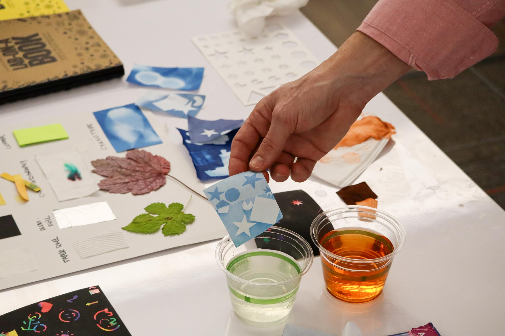
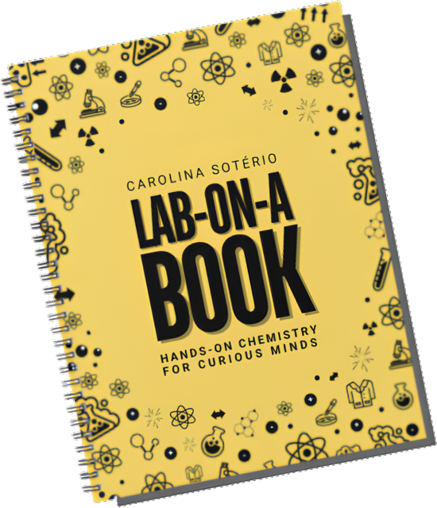

Tools Competition 2026 winnerlab-on-a-book · inventor
A real chemistry lab, printed on paper.
Lab-on-a-Book is an ultra-low-cost, paper-based science platform that lets students do real experiments, from cyanotypes and chromatography to pH and microbiology, at home or in schools that have no lab. Lab-on-a-Bot, an AI curiosity companion, guides students with questions instead of handing them answers.
- awardTools Competition winner, Renaissance Philanthropy & The Learning Agency
- researchConstructionism 2025 and ISLS 2026 papers, including an Outstanding Student Poster Award